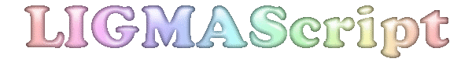

|
 LIGMAScript Programming LanguageLIGMAScript (pronounced ligmascript) is a blazingly fast, structured, imperative, procedural, non-object-oriented, non-functional functional, general purpouse, compiled, byte-code interpreted digital computer programming language for programming digital computers. It's currently being worked on, and when finished it will be the best programming language ever. [1] Click here for the draft of the LIGMAScript manual/guide! What's a LIGMAScript?LIGMAScript stands for List Interpreted General Manipulation and Arithmetic Script. Why LIMGAScriptDynamical typesDeclaring types for variables is super-annoying, so why bother? The LIGMAScript is designed without any type declarations for this reason. This also means that you don't have to write a subroutine for each type or use stinky hacks like 'the generics' as they are called in other languages. Just write one subroutine, and it will work with any values that it may touch. No FunctionsIt's really hard to come up for names for functions and then you need to pass parameters, and then decide what value the function is going to return and so on and so forth. For this reason the LIGMAScript language does not have any functions. [2] PerformanceLIGMAScript is a compiled, whych automaticcally means that it is also very fast, but compiling straight to machine-code compromises the squishiness of the langauge, so LIGMAScript is compiled to bytecode and then intepreted by the LIGMAScript Virtual Machine (LIGMASVM for short). ReliabiltyLIGMAScript Virtual Machine is designed in such a way that it doesn't crash (and when it does it's always intentional). The VM also prevents memory leaks, by collecting the garbage (reference counted, for maximum speed) LIGMAScript VM implements an innovative memory model which consists of one very large array. This ensures zero memory fragmentation. Supports up to 65000 different values (you will not need more). Syntax
The most notable syntactical feature of the language is that it
uses lithuanian notation. This means that two compute the sum of
two two's instead of writing Hello World
"hello world" . cr
Is Impressive
is-impressive (lambda
How to achieve the LIGMAScriptThere's is still no very large release, but it's possible to access the source code of the LIGMAScript on the github.com. To use the LIGMAScript, simply compile it. The main.cpp has a simple runtime, but ideally you'd compile without main() and instead would embed the VM in an application. Notes
|
||||||||